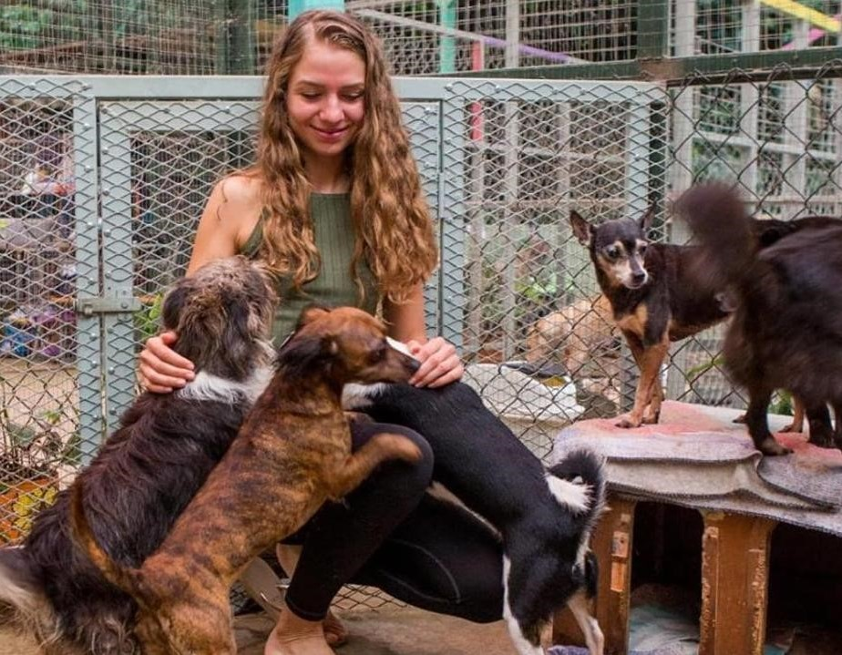
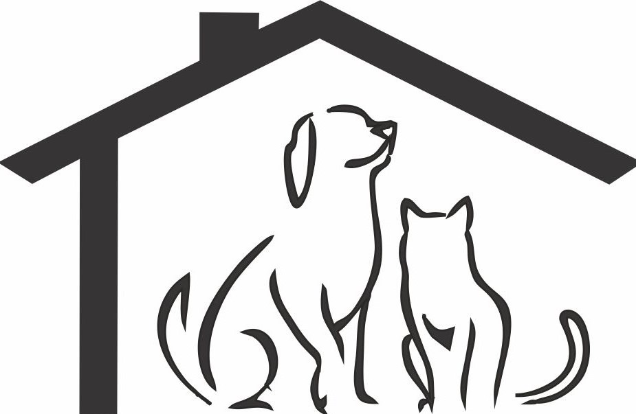

At Zoe's House of Adoption, we are dedicated to providing a loving, forever home for dogs in need.
Our mission is to rescue abandoned and neglected animals, offering them a safe space where they can heal, feel loved, and find their new family.
Zoe's House focuses on responsible adoption practices, ensuring each dog is placed in a home where they can thrive.
Donations help us provide medical care, food, shelter, and essential services for our animals, as well as support our adoption efforts.
Your generosity directly saves lives and helps us continue our work to match every dog with the right family.

The Animal Shelter Center is a non-profit organization committed to rescuing and caring for animals that have been abandoned, abused, or neglected.
We provide a safe haven for homeless pets, offering medical treatment, rehabilitation, and a place to call home while waiting for adoption.
Our goal is to reduce the overpopulation crisis through adoption programs, spay/neuter initiatives, and public education.
By donating, you help us provide veterinary care, food, shelter, and support for animals in need.
Your contribution gives these animals a chance at a better, healthier life and supports our ongoing efforts to find them loving homes.

RoamsToHomes is a passionate organization dedicated to providing a second chance to stray and abandoned animals by helping them find their forever homes.
Our mission is to rescue, rehabilitate, and rehome dogs and cats who have been left to roam the streets or surrendered by their previous owners.
Your donations help us provide essential veterinary care, shelter, food, and rehabilitation services, giving these animals the care and attention they deserve.
Join us in making a difference by supporting our efforts to bring love, safety, and stability to every animal we rescue.
Your contribution ensures that more animals are given the chance to roam from uncertainty to the warmth of a home.
If you are decided to donate to one of this dog centres of adoption, contact us. Remember: with every adoption, one more dog finds happiness!🐾🐾🐾